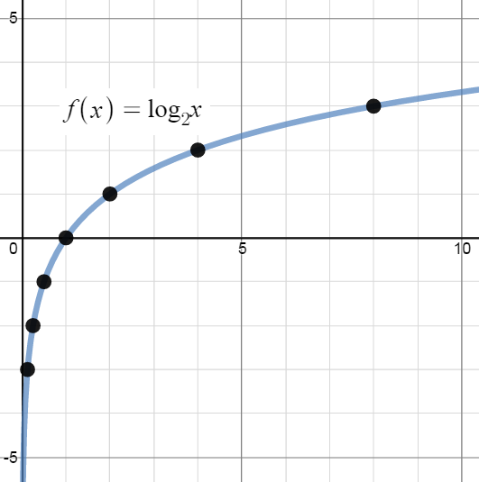

In Module 4A-Exponential and Logarithmic Functions, we introduced the logarithmic functions as inverses of exponential functions and discussed a few of their functional properties from that perspective. In this module, we explore the algebraic properties (or rules) of logarithms. Historically, these have played a huge role in the scientific development of our society since, among other things, they were used to develop analog computing devices called slide rules which enabled scientists and engineers to perform accurate calculations leading to such things as space travel and the moon landing. As we shall see shortly, logs have properties similar to all of the properties of exponents. We first restate the definition of a logarithm and the fact that it is the inverse of an exponential function.
Definition of Logarithm: Let $b >0$ with $b \neq 1$. If $a$ and $c$ are numbers
| Problem | Means | The answer is | because |
| $\log_2 8$ | $2$ to what power is $8$? | $3$ | $2^3$ is $8$ |
| $\log_2 16$ | $2$ to what power is $16$? | $4$ | $2^4$ is $16$ |
| $\log_2 10$ | $2$ to what power is $10$? | somewhere between $3$ and $4$ | $2^3 = 8$ and $2^4 = 16$ |
| $\log_8 2$ | $8$ to what power is $2$? | $\frac{1}{3}$ | $8^{\frac{1}{3}}= \sqrt[3]{8} = 2$ |
| $\log_{10} 10,000$ | $10$ to what power is $10,000$? | $4$ | $10^4$ = $10, 000$ |
| $\log_{10} \frac{1}{100}$ | $10$ to what power is $ =\frac{1}{100}$? | $-2$ | $10^{-2} = \frac{1}{10^2} = \frac{1}{100}$ |
| $\log_5 0$ | $5$ to what power is $0$? | There is no answer | $5^{?}$ will never be $0$ |
|
 |
Using the log to model a real world problem
This pattern of slower and slower growth is one of the most important characteristics of the log. It can be used to "slow down" functions that have too wide a range to be practical to work with.
Using the log to model a real world problem Lewis Fry Richardson (1881–1953) was a British meteorologist and mathematician. He was also an active Quaker and committed pacifist, and was one of the first men to apply statistics to the study of human conflict. Richardson catalogued $315$ wars between 1820 and 1950, and categorized them by how many deaths they caused. At one end of the scale is a deadly quarrel, which might result in $1$ or $2$ deaths. At the other extreme are World War I and World War II, which are responsible for roughly $10$ million deaths each.
As you can see from the chart above, working with these numbers is extremely difficult: on a scale from $0$ to $10$ Million, there is no visible difference between (say) 1 and 100,000. Richardson solved this problem by taking the common log of the number of deaths. So a conflict with 1,000 deaths is given a magnitude of $\log(1000) = 3.$ On this scale, which is now the standard for conflict measurement, the magnitudes of all wars can be easily represented.
Richardson's scale makes it practical to chart, discuss, and compare wars and battles from the smallest to the biggest. For instance, he discovered that each time you move up by one on the scale—that is, each time the number of deaths multiplies by $10$—the number of conflicts drops by a third. (So there are roughly three times as many "magnitude $5$" wars as "magnitude $6$," and so on.)
The log is useful here because the logarithm function itself grows so slowly that it compresses the entire 1 to 10,000,000 range into a $0$ to $7$ scale. The same trick is used—for the same reason—to study topics ranging from earthquakes to sound waves.
Just as there are fundamental rules of exponents, there are corresponding fundamental rules of logarithms.
For $b>0$, $b \neq 1$ and real numbers $m$, $n$, $M$ and $N$, the exponent and logarithm rules are:
| Rules for Exponents: | Rules for Logarithms: | |
| Product Rule | $b^m b^n = b^{m+n}$ | $\log_b (MN) = \log_b M + \log_b N$ |
| Quotient Rule | $\dfrac{b^m}{b^n} = b^{m-n}$ | $\log_b \dfrac{M}{N} = \log_b M - \log_b N$ |
| Power Rule | $(b^m)^n = b^{mn}$ | $\log_b M^n= n\log_b M$ |
| Zero Rule | $b^0 = 1$ | $\log_b(1) = 0$ |
Example 4B-1: Properties of Logarithms
Suppose you are given these two facts:
Then we can use the laws of logarithms to conclude that:
NOTE: All three of these above results can be found quickly, and without a calculator. Note that the second result could also be figured out directly, since $4^{1/2} = 2.$
These rules of logarithms were very important historically, because they enabled pre-calculator mathematicians to perform multiplication (which is very time-consuming and error prone) by doing addition (which is faster and easier). These rules are still useful in simplifying complicated expressions and solving equations and we will explore these uses in the next module. The logarithm rules may seem a bit strange, but they come about because of the way exponents behave.
If you understand what an exponent is, you can very quickly see why the rules of exponents work. But why do logarithms have the rules we listed above?
As you work through the text, you will demonstrate these rules intuitively, by viewing the logarithm as a counter. ( $\log_2 8$ asks "how many $2$s do I need to multiply, in order to get $8$?") However, these rules can also be rigorously proven, using the rules of exponents as our starting place.
Proving the Product Rule of Logarithms, $\log_b (MN) = \log_b M + \log_b N$
| $c = \log_b M$ | I'm just inventing $c$ to represent this log |
| $b^c = M$ | Rewriting the above expression as an exponent. ( $\log_b M$ asks "$b$ to what power is $M$?" And the equation answers: "$b$ to the $c$ is $M$.') |
| $d = \log_b N$ | Similarly, $d$ will represent the other log. |
| $b^d = N$ | |
| $\log_b (MN) = \log_b (b^c b^d)$ | Replacing $M$ and $N$ based on the previous equations |
| $= \log_b (b^{c+d})$ | This is the key step! It uses the first rule of exponents. Thus you can see that the rules of logarithms come directly from the rules of exponents. |
| $= c + d$ | $\log_b (b^{c+d})$ asks the question: "$b$ to what power is $b^{c+d}$ ?" Looked at this way, the answer is obviously $(c+d)$ . Hence, you can see how the logarithm and exponential functions cancel each other out, as inverse functions must. |
| $= \log_b M + \log_b N$ | Replacing $c$ and $d$ with what they were originally defined as. Hence, we have proven what we set out to prove. |
To test your understanding, try proving the Quotient Rule of logarithms: the proof is very similar to the proof just given above. For the Power Rule, you need invent only one variable, $f = \log_b M$. In each case, you will rely on a different one of the rules of exponents, showing how each exponent rule corresponds to one of the logarithms rules.
Example 4B-2: Expand the following using the rules of logarithms and simplify. Assume when necessary that all quantities represent positive real numbers.
| $\log_2\left( \dfrac{8}{x}\right)$ | $ = \log_2(8) - \log_2(x)$ | Quotient Rule |
| $ = 3 - \log_2(x)$ | Since $2^3 = 8$ we can simplify the $\log_2(8)=3$ |
| $\ln (x^2y)$ | $ = \ln(x^2) + \ln(y)$ | Product Rule |
| $ = 2\ln(x) + \ln(y)$ | Power Rule |
| $\log \left( \dfrac{\sqrt{x}}{x+3} \right)$ | $ = \log(\sqrt{x}) - \log(x+3)$ | Quotient Rule |
| $ = \log(x^{1/2}) - \log(x+3)$ | Rewrite the square root as an exponent | |
| $ = \frac{1}{2}\log(x) - \log(x+3)$ | Power Rule |
| $\log(100A^{0.3}B)$ | $ = \log(100) + \log(A^{0.3})+\log(B)$ | Product Rule |
| $ = 2 + \log(A^{0.3})+\log(B)$ | Simplify $\log(100) = 2$ since $10^2=100$ | |
| $ = 2 + 0.3\log(A)+\log(B)$ | Power Rule |
Example 4B-3: Use the rules of logarithms to write the following as a single logarithm.
| $\log(x) + \log(y) - \log(5)$ | $ = \log(xy) - \log(5)$ | Product Rule to combine $\log(x) + \log(y)$ |
| $ = \log\left( \dfrac{xy}{5} \right)$ | Quotient Rule |
| $2\ln(x-1) -\ln(x+1)$ | $ = \ln(x-1)^2 -\ln(x+1)$ | Power Rule |
| $= \ln\left(\dfrac{(x-1)^2}{x+1}\right)$ | Quotient Rule |
Example 4B-4: In the western United States the area $A$ (in $\mbox{mi}^2$) affected by an earthquake is related to the magnitude $R$ of the quake by the formula: $$R = 2.3 \log(A + 3000) - 5.1$$